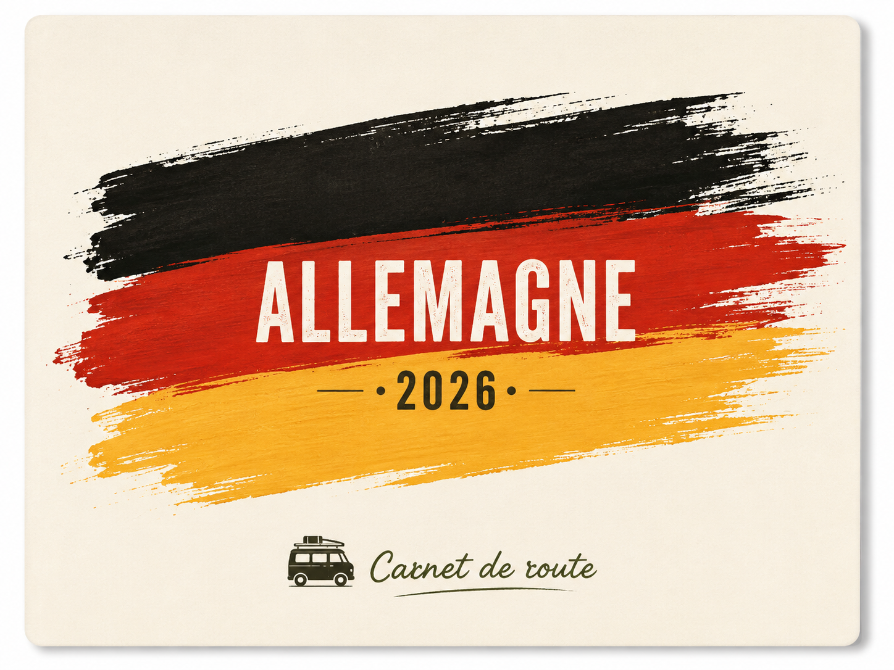
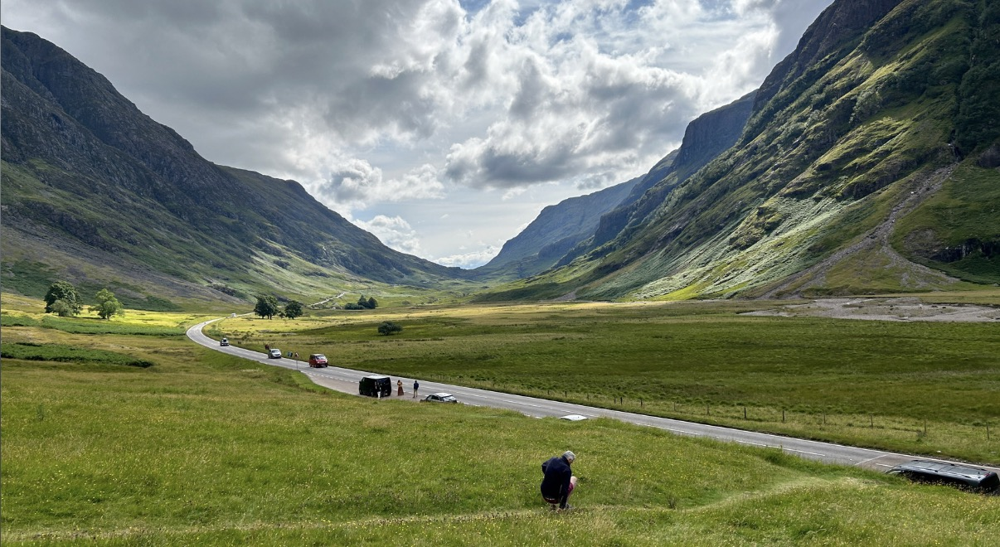
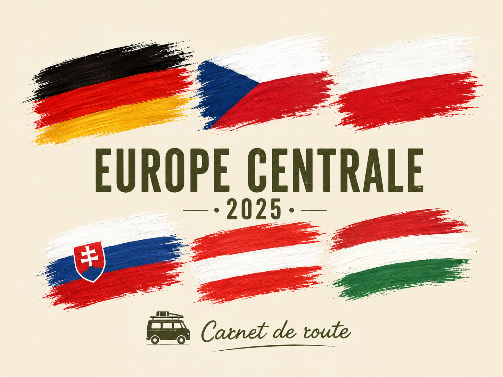

Sur la route des contes de Grimm
Villages de contes, villes historiques, vallée du Rhin et nos conseils pratiques pour voyager en Allemagne avec Léon.
Découvrir le carnet →Préparer • rouler • profiter
Pas un journal de voyage, mais ce que nous aurions aimé trouver avant de prendre la route.
Nos itinéraires, les endroits qui valent vraiment le détour, nos spots pour dormir, les bons plans, les choses à anticiper et les petites erreurs que nous éviterions la prochaine fois.
De quoi vous inspirer pour construire votre propre voyage, à votre rythme et à votre façon. 🚐
Choisir sa prochaine route
Des voyages que nous avons réellement parcourus avec Léon, avec nos étapes, nos conseils et tout ce qu’il faut savoir pour préparer votre propre itinéraire.

Villages de contes, villes historiques, vallée du Rhin et nos conseils pratiques pour voyager en Allemagne avec Léon.
Découvrir le carnet →
Des routes spectaculaires, des nuits en pleine nature et nos conseils pour découvrir l’Écosse en camping-car.
Découvrir le carnet →
Plusieurs pays, beaucoup de kilomètres et une succession d’étapes très différentes au cœur de l’Europe.
Découvrir le carnet →